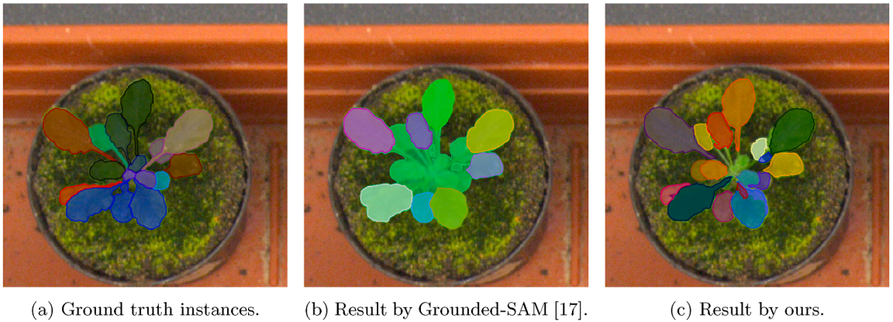

LeafGen: Structure-aware Leaf Image Generation for Annotation-free Leaf Instance Segmentation

Type: Journal Paper
Publication: Plant Phenomics, Vol. 7, Issue 4, Dec. 2025
DOI: https://doi.org/10.1016/j.plaphe.2025.100092
Abstract:
Instance segmentation of plant leaves plays a crucial role in plant phenotyping, leveraging the rapid advancements in neural network research. A significant challenge in leaf instance segmentation lies in the preparation of training datasets, which typically require manual annotations comprising numerous pairs of ground-truth masks and corresponding plant photographs. Recently, segmentation models pre-trained on large-scale datasets, e.g., Segment Anything, have enabled training-free (i.e., zero-shot) instance segmentation accessible to the public. However, applying these models to leaf segmentation often yields unsatisfactory results, as the training datasets for these foundation models may lack sufficient plant imagery to accurately segment leaves exhibiting heavy occlusions and similar textures. To address this issue, we propose a fully automatic method for generating training datasets for leaf instance segmentation, combining an off-the-shelf zero-shot model with structure-aware image generation. Specifically, given a set of plant images and an L-system growth rule representing the structural pattern of the target plant, the proposed method automatically produces an arbitrary number of instance mask and photorealistic plant image pairs, eliminating the need for manual annotation. To maximize usability, we also provide a GUI front-end that integrates the entire pipeline of our method. Experiments on Arabidopsis, Komatsuna, and Rhaphiloepsis plants demonstrate that our method achieves more accurate segmentation compared to state-of-the-art zero-shot models, attaining AP@50 scores of 74.8, 76.0, and 88.2 for leaf instance segmentation of Arabidopsis, Komatsuna, and Rhaphiloepsis, respectively—without any manual annotation.